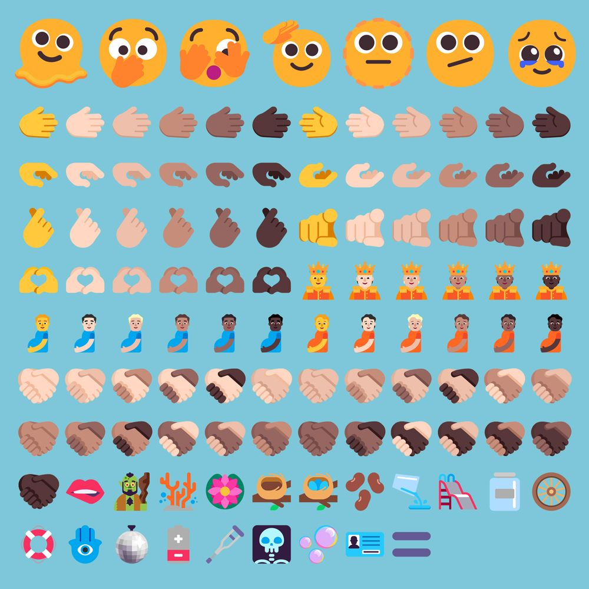
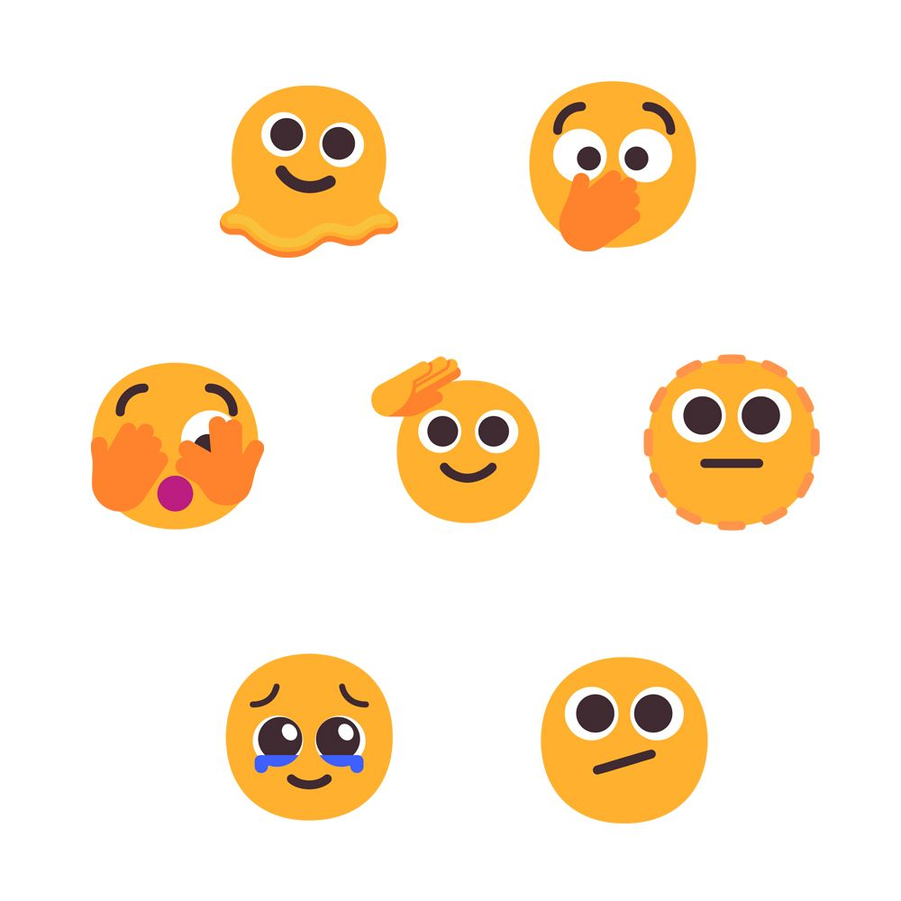

This Windows 11 update, entitled 2H22 includes all of the new emojis that were approved by Unicode in September 2021's Emoji 14.0.
107 of these recommendations make their debut in Windows 11 2H22> while five of the 🤝 Handshakevariants have been supported by Microsoft since a Windows 10update in July 2015.
This update does not, however, contain any new emojis from this month's Emoji 15.0 recommendations.
This means that Windows users will have to continue to wait for support for the likes of the Shaking Face, the Goose, and the plain Pink Heart.
🆕 New
Windows 11 2H22update introduces the seven brand new smiley face emojis. - 🫠 Melting Face
- 🫢 Face with Open Eyes and Hand Over Mouth
- 🫣 Face with Peeking Eye
- 🫡 Saluting Face
- 🫥 Dotted Line Face
- 🫤 Face with Diagonal Mouth
- 🥹 Face Holding Back Tears
Windows 11 22H2also contains three new people emojis in the form of the gender-neutral 🫅 Person with Crown and 🫄 Pregnant Person emojis, as well as a new 🫃 Pregnant Man emoji. All three support skin tone modifier options.
 Windows 11 now also includes one new body part emoji - the 🫦 Biting Lip - and a new 🧌 Troll emoji - the first fantasy creature introduced since Emoji 5.0.
Windows 11 now also includes one new body part emoji - the 🫦 Biting Lip - and a new 🧌 Troll emoji - the first fantasy creature introduced since Emoji 5.0.
Seven brand new gesture emojis also make their debut within this update.

- 🫱 Rightwards Hand
- 🫲 Leftwards Hand
- 🫳 Palm Down Hand
- 🫴 Palm Up Hand
- 🫰 Hand with Index Finger and Thumb Crossed
- 🫵 Index Pointing at the Viewer
- 🫶 Heart Hands
Additionally, there are now twenty new skin tone variants of the 🤝 Handshake emoji within Windows 11 drawn from Emoji 14.0.

- 🫱🏻🫲🏼 Handshake: Light Skin Tone, Medium-Light Skin Tone
- 🫱🏻🫲🏽 Handshake: Light Skin Tone, Medium Skin Tone
- 🫱🏻🫲🏾 Handshake: Light Skin Tone, Medium-Dark Skin Tone
- 🫱🏻🫲🏿 Handshake: Light Skin Tone, Dark Skin Tone
- 🫱🏼🫲🏻 Handshake: Medium-Light Skin Tone, Light Skin Tone
- 🫱🏼🫲🏽 Handshake: Medium-Light Skin Tone, Medium Skin Tone
- 🫱🏼🫲🏾 Handshake: Medium-Light Skin Tone, Medium-Dark Skin Tone
- More
Rounding out the new emojis in Windows 11 2H22 are a small number of new additions across the 🐻 Animals & Nature, 🍔 Food & Drink, 💡 Objects, and 🔣 Symbols categories.

- 🪸 Coral
- 🪷 Lotus
- 🪹 Empty Nest
- 🪺 Nest with Eggs
- 🫘 Beans
- 🫗 Pouring Liquid
- 🫙 Jar
🆙 Changed
🥲 Smiling Face with Tear now has a smaller tear tucked in closer to its left eye.

😷 Face with Medical Mask now has its eyes open, showing a more neutral expression than its previous design.

❤️ Red Heart has new shadowing and a reflective sheen, instead of being a block color.

This change has also been made for the other colored hearts, such as 💜 Purple Heart, 💛 Yellow Heart, and 🤍 White Heart.
👅 Tongue has additional shading across its median sulcus and the back of the throat.
💻 Release
The Windows 11 22H2 update is now available as a free update for Windows 11 users in select regions, with global rollout continuing over the next few weeks and months.
Those using Windows Insider builds would have already received this update at various stages over the past few years, varying based on the fast or slow ring options.
The first Insider build to receive this emoji update was Build 22557, released 2021-02-16.
📖 Read More
- All new emojis in Windows 11 2H22
- All changed emojis in Windows 11 2H22
- Windows 11 November 2021 Emoji Changelog
- 🫴 Palm Up Hand
- 🫰 Hand with Index Finger and Thumb Crossed
- Fluent Emojis Look Different To How You Last Saw Them
- Windows 11 Emoji Changelog